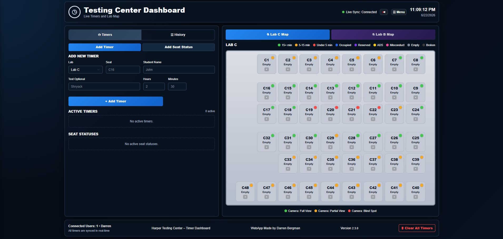

Real-time timers
Create timed exams with lab, seat, student, test type, and assigned time. Timers synchronize across workstations and preserve state through refreshes.
Operations improvement case study
A real-time platform designed around the daily work of a college testing center—centralizing timers, seating, lab visibility, history, and staff awareness.

The challenge
Staff needed a faster and more reliable way to know who was testing, where students were seated, how much time remained, which seats were occupied or reserved, and what had already happened during the day. Individual desktop timers, paper notes, verbal updates, and manual observation created duplicated effort and information gaps.
The goal was a single source of truth for active exams, seat status, timer progress, testing history, and lab awareness.
My role
I served as project lead, product owner, UX planner, tester, and implementation coordinator. I identified the workflow problem, defined requirements, planned the interface, tested the application during real use, gathered staff feedback, and directed iteration.
AI-assisted development tools accelerated prototyping and troubleshooting, while I retained ownership of the requirements, workflow logic, experience design, testing, deployment decisions, and quality assurance.
Core capabilities
Create timed exams with lab, seat, student, test type, and assigned time. Timers synchronize across workstations and preserve state through refreshes.
Color-coded lab layouts display available, occupied, reserved, active, and expired seats alongside camera-coverage awareness.
Non-timed exams and reserved seats can be tracked without forcing every student into a countdown workflow.
A compact operational list surfaces student names, locations, test types, remaining time, and exams needing attention.
Completed activity becomes a searchable, paginated operational record with clear statuses and compact date formatting.
Visual and audio expiration alerts, input validation, field limits, and confirmation prompts reduce errors during busy periods.
Separate lab layouts and status tracking make the platform adaptable as testing-center operations expand.
Compact layouts, predictable wrapping, clean history cards, and field constraints keep the tool usable across workstations.
Product development
The application evolved through focused versions: the initial timer system, seat-map integration, occupied and reserved states, history logging, history redesign, delete safeguards, input cleanup, additional labs, responsive improvements, and operational refinements.
Staff observations directly influenced confirmation behavior, seat-status presentation, history formatting, timer flow, alert expectations, and support for additional lab layouts.
Technology
Impact
The dashboard reduced reliance on separate timers, paper notes, verbal-only communication, manual seat tracking, and isolated workstation information. It improved timer visibility, seat awareness, staff coordination, workflow consistency, history tracking, and confidence during busy testing periods.
It demonstrates my ability to identify an operational problem, translate staff needs into software requirements, build a functional real-time solution, design for nontechnical users, iterate from feedback, and manage a product from concept through deployment.